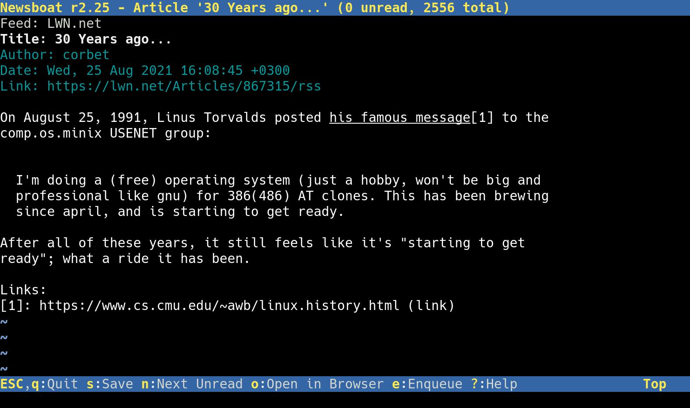

Newsboat is an RSS/Atom feed reader for the text console. It’s an actively maintained fork of Newsbeuter.

The current version is 2.40, released on 21st of June 2025:
Our OpenPGP key, 4ED6CD61932B9EBE, can be downloaded from keys.openpgp.org or directly from us. The fingerprint is B8B1 756A 0DDB F076 0CE6 7CCF 4ED6 CD61 932B 9EBE.
To receive updates on new releases and whatnot, please subscribe to the news feed. You can also find us on:
- GitHub, where we host the repo and the issue tracker
- Google Groups, where we keep our mailing list (newsboat@googlegroups.com)
- irc.libera.chat, where we hang out on #newsboat; you can connect via a webchat. We do not have a channel on Freenode anymore
If you have found a security vulnerability, please email security@newsboat.org, and use the aforementioned OpenPGP key if at all possible.
Previous releases:
- 2.39, on 23rd of March 2025 (tar.xz, asc, docs, FAQ, changelog)
- 2.38, on 22nd of December 2024 (tar.xz, asc, docs, FAQ, changelog)
- on 22nd of September 2024
- 2.37 (tar.xz, asc, docs, FAQ, changelog)
- 2.36.1 (tar.xz, asc, docs, FAQ, changelog)
- 2.35.1 (tar.xz, asc, docs, FAQ, changelog)
- 2.34.1 (tar.xz, asc, docs, FAQ, changelog)
- 2.33.1 (tar.xz, asc, docs, FAQ, changelog)
- 2.32.1 (tar.xz, asc, docs, FAQ, changelog)
- 2.31.1 (tar.xz, asc, docs, FAQ, changelog)
- 2.30.2 (tar.xz, asc, docs, FAQ, changelog)
- 2.29.1 (tar.xz, asc, docs, FAQ, changelog)
- 2.28.1 (tar.xz, asc, docs, FAQ, changelog)
- 2.27.1 (tar.xz, asc, docs, FAQ, changelog)
- 2.26.1 (tar.xz, asc, docs, FAQ, changelog)
- 2.25.1 (tar.xz, asc, docs, FAQ, changelog)
- 2.24.1 (tar.xz, asc, docs, FAQ, changelog)
- 2.23.1 (tar.xz, asc, docs, FAQ, changelog)
- 2.22.2 (tar.xz, asc, docs, FAQ, changelog)
- 2.21.1 (tar.xz, asc, docs, FAQ, changelog)
- 2.20.2 (tar.xz, asc, docs, FAQ, changelog)
- 2.19.1 (tar.xz, asc, docs, FAQ, changelog)
- 2.36, on 22nd of June 2024 (tar.xz, asc, docs, FAQ, changelog)
- 2.35, on 24th of March 2024 (tar.xz, asc, docs, FAQ, changelog)
- 2.34, on 25th of December 2023 (tar.xz, asc, docs, FAQ, changelog)
- 2.33, on 24th of September 2023 (tar.xz, asc, docs, FAQ, changelog)
- 2.32, on 25th of June 2023 (tar.xz, asc, docs, FAQ, changelog)
- 2.31, on 26th of March 2023 (tar.xz, asc, docs, FAQ, changelog)
- 2.30.1, on 30th of December 2022 (tar.xz, asc, docs, FAQ, changelog)
- 2.30, on 25th of December 2022 (tar.xz, asc, docs, FAQ, changelog)
- 2.29, on 25th of September 2022 (tar.xz, asc, docs, FAQ, changelog)
- 2.28, on 26th of June 2022 (tar.xz, asc, docs, FAQ, changelog)
- 2.27, on 22nd of March 2022 (tar.xz, asc, docs, FAQ, changelog)
- 2.26, on 27th of December 2021 (tar.xz, asc, docs, FAQ, changelog)
- 2.25, on 20th of September 2021 (tar.xz, asc, docs, FAQ, changelog)
- 2.24, on 20th of June 2021 (tar.xz, asc, docs, FAQ, changelog)
- 2.23, on 21st of March 2021 (tar.xz, asc, docs, FAQ, changelog)
- 2.22.1, on 10th of January 2021 (tar.xz, asc, docs, FAQ, changelog)
- 2.22, on 21st of December 2020 (tar.xz, asc, docs, FAQ, changelog)
- 2.21, on 20th of September 2020 (tar.xz, asc, docs, FAQ, changelog)
- 2.20.1, on 24th of June 2020 (tar.xz, asc, docs, FAQ, changelog)
- 2.20, on 20th of June 2020 (tar.xz, asc, docs, FAQ, changelog)
- 2.19, on 22nd of March 2020 (tar.xz, asc, docs, FAQ, changelog)
- 2.18, on 22nd of December 2019 (tar.xz, asc, docs, FAQ, changelog)
- 2.17.1, on 2nd of October 2019 (tar.xz, asc, docs, FAQ, changelog)
- 2.17, on 22nd of September 2019 (tar.xz, asc, docs, FAQ, changelog)
- 2.16.1, on 26th of June 2019 (tar.xz, asc, docs, FAQ, changelog)
- 2.16, on 25th of June 2019 (tar.xz, asc, docs, FAQ, changelog)
- 2.15, on 23rd of March 2019 (tar.xz, asc, docs, FAQ, changelog)
- 2.14.1, on 10th of February 2019 (tar.xz, asc, docs, FAQ, changelog)
- 2.14, on 29th of December 2018 (tar.xz, asc, docs, FAQ, changelog)
- 2.13, on 22nd of September 2018 (tar.xz, asc, docs, FAQ, changelog)
- 2.12, on 24th of June 2018 (tar.xz, asc, docs, FAQ, changelog)
- 2.11.1, on 30th of March 2018 (tar.xz, asc, docs, FAQ, changelog)
- 2.11, on 25th of March 2018 (tar.xz, asc, docs, FAQ, changelog)
- 2.10.2, on 25th of December 2017 (tar.xz, asc, docs, FAQ, changelog)
- 2.10.1, on 22nd of September 2017 (tar.xz, asc, docs, FAQ, changelog)
- 2.10, on 20th of September 2017 (tar.xz, asc, docs, FAQ, changelog)